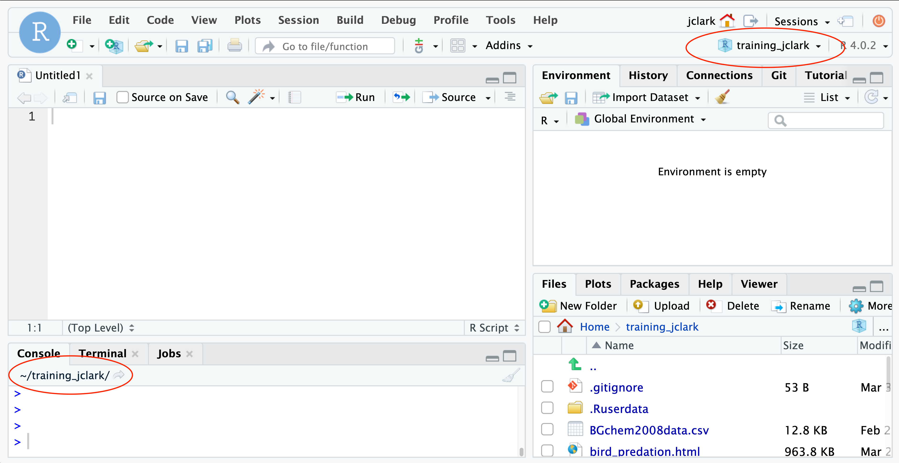
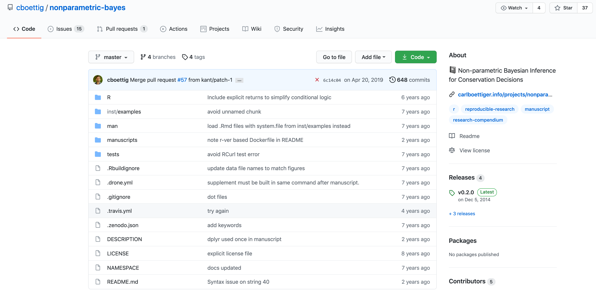

1 Introduction and Setup
1.1 Introduction to reproducible research
Reproducibility is the hallmark of science, which is based on empirical observations coupled with explanatory models. And reproducible research is at the core of what we do at NCEAS, research synthesis.
The National Center for Ecological Analysis and Synthesis was funded over 25 years ago to bring together interdisciplinary researchers in exploration of grand challenge ecological questions through analysis of existing data. Such questions often require integration, analysis and synthesis of diverse data across broad temporal, spatial and geographic scales. Data that is not typically collected by a single individual or collaborative team. Synthesis science, leveraging previously collected data, was a novel concept at that time and the approach and success of NCEAS has been a model for other synthesis centers.
 During this course you will learn about some of the challenges that can be encountered when working with published data, but more importantly, how to apply best practices to data collection, documentation, analysis and management to mitigate these challenges in support of reproducible research.
During this course you will learn about some of the challenges that can be encountered when working with published data, but more importantly, how to apply best practices to data collection, documentation, analysis and management to mitigate these challenges in support of reproducible research.
Why is reproducible research important?
Working in a reproducible manner builds efficiencies into your own research practices. The ability to automate processes and rerun analyses as you collect more data, or share your full workflow (including data, code and products) with colleagues, will accelerate the pace of your research and collaborations. However, beyond these direct benefits, reproducible research builds trust in science with the public, policy makers and others.

What data were used in this study? What methods applied? What were the parameter settings? What documentation or code are available to us to evaluate the results? Can we trust these data and methods?
Are the results reproducible?

Ionnidis (2005) contends that “Most research findings are false for most research designs and for most fields,” and a study of replicability in psychology experiments found that “Most replication effects were smaller than the original results” (Open Science Collaboration, 2015).

In the case of ‘climategate,’ it took three years, and over 300 personnel, to gather the necessary provenance information in order to document how results, figures and other outputs were derived from input sources. Time and effort that could have been significantly reduced with appropriate documentation and reproducible practices. Moving forward, through reproducible research training, practices, and infrastructure, the need to manually chase this information will be reduced enabling replication studies and great trust in science.
Computational reproducibility
While reproducibility encompasses the full science lifecycle, and includes issues such as methodological consistency and treatment of bias, in this course we will focus on computational reproducibility: the ability to document data, analyses, and models sufficiently for other researchers to be able to understand and ideally re-execute the computations that led to scientific results and conclusions.
The first step towards addressing these issues is to be able to evaluate the data, analyses, and models on which conclusions are drawn. Under current practice, this can be difficult because data are typically unavailable, the method sections of papers do not detail the computational approaches used, and analyses and models are often conducted in graphical programs, or, when scripted analyses are employed, the code is not available.
And yet, this is easily remedied. Researchers can achieve computational reproducibility through open science approaches, including straightforward steps for archiving data and code openly along with the scientific workflows describing the provenance of scientific results (e.g., Hampton et al. (2015), Munafò et al. (2017)).
Conceptualizing workflows
Scientific workflows encapsulate all of the steps from data acquisition, cleaning, transformation, integration, analysis, and visualization.

Workflows can range in detail from simple flowcharts to fully executable scripts. R scripts and python scripts are a textual form of a workflow, and when researchers publish specific versions of the scripts and data used in an analysis, it becomes far easier to repeat their computations and understand the provenance of their conclusions.
1.1.0.1 Summary
Computational reproducibility provides:
- transparency by capturing and communicating scientific workflows
- research to stand on the shoulders of giants (build on work that came before)
- credit for secondary usage and supports easy attribution
- increased trust in science
Preserving computational workflows enables understanding, evaluation, and reuse for the benefit of future you and your collaborators and colleagues across disciplines.
Reproducibility means different things to different researchers. For our purposes, practical reproducibility looks like:
- Preserving the data
- Preserving the software workflow
- Documenting what you did
- Describing how to interpret it all
During this course will outline best practices for how to make those four components happen.
1.2 RStudio and Git/GitHub Setup
1.2.1 Learning Objectives
In this lesson, you will learn:
- How to check to make sure your RStudio environment is set up properly for analysis
- How to set up git
1.2.2 Logging into the RStudio server
To help prevent us from spending most of this lesson remotely troubleshooting the myriad of issues that can arise when setting up the R, RStudio, and git environments, we have chosen to have everyone work on a remote server with all of the software you need installed. We will be using a special kind of RStudio just for servers called, aptly, RStudio Server. If you have never worked on a remove server before, you can think of it like working on a different computer via the internet. Note that the server has no knowledge of the files on your local filesystem, but it is easy to transfer files from the server to your local computer, and vice-versa, using the RStudio server interface.
Here are the instructions for logging in and getting set up:
Setup
You should have received an email prompting you to change your password for your server account. If you did not, please let one of the helpers know on Slack.
If you were able to successfully change your password, you can log in at: https://included-crab.nceas.ucsb.edu/
In this workshop, we are going to be using R projects to organize our work. An R project is tied to a directory on your local computer, and makes organizing your work and collaborating with others easier.
We are going to be doing nearly all of the work in this course in one project. Our version of RStudio server allows you to share projects with others. Sharing your project with the instructors of the course will allow for them to jump into your session and type along with you, should you encounter an error you cannot fix.
Setup
In your RStudio server session, follow these steps to set up your shared project:
- In the “File” menu, select “New Project”
- Click “New Directory”
- Click “New Project”
- Under “Directory name” type:
training_{USERNAME}, eg:training_jclark - Leave “Create Project as subdirectory of:” set to
~ - Click “Create Project”
Your Rstudio should now open your project. To share your project with the instructor team, locate the “project switcher” dropdown menu in the upper right of your RStudio window. This dropdown has the name if your project (eg: training_clark), and a dropdown arrow. Click the dropdown menu, then “Share Project.” When the dialog box pops up, add the following usernames to your project:
- jclark
- aebudden
- jones
- scsik
Once those names show up in the list, click “OK.”
Setting up git
Before using git, you need to tell it who you are, also known as setting the global options. The only way to do this is through the command line. Newer versions of RStudio have a nice feature where you can open a terminal window in your RStudio session. Do this by selecting Tools -> Terminal -> New Terminal.
A terminal tab should now be open where your console usually is.
To set the global options, type the following into the command prompt, with your actual name, and press enter:
git config --global user.name "Matt Jones"Note that if it ran successfully, it will look like nothing happened. We will check at the end to makre sure it worked.
Next, enter the following line, with the email address you used when you created your account on github.com:
git config --global user.email "gitcode@magisa.org"Note that these lines need to be run one at a time.
Next, we will set our credentials to not time out for a very long time. This is related to the way that our server operating system handles credentials - not doing this will make your PAT (which we will set up soon) expire immediately on the system, even though it is actually valid for a month.
git config --global credential.helper 'cache --timeout=10000000'Finally, check to make sure everything looks correct by entering this command, which will return the options that you have set.
git config --global --list1.2.2.1 GitHub Authentication
GitHub recently deprecated password authentication for accessing repositories, so we need to set up a secure way to authenticate. The book Happy git with R has a wealth of information related to working with git in R, and these instructions are based off of section 10.1.
We will be using a PAT (Personal Access Token) in this course, because it is easy to set up. For better security and long term use, we recommend taking the extra steps to set up SSH keys.
Steps:
- Run
usethis::create_github_token()in the console - In the browser window that pops up, scroll to the bottom and click “generate token.” You may need to log into GitHub first.
- Copy the token from the green box on the next page
- Back in RStudio, run
credentials::set_github_pat() - Paste your token into the dialog box that pops up.
1.2.3 Preparing to work in RStudio

The default RStudio setup has a few panes that you will use. Here they are with their default locations:
- Console (entire left)
- Environment/History (tabbed in upper right)
- Files/Plots/Packages/Help (tabbed in lower right)
You can change the default location of the panes, among many other things: Customizing RStudio.
One key question to ask whenever we open up RStudio is “where am I?” Because we like to work in RStudio projects, often this question is synonymous with “what project am I in?” In our setup we have already worked with R projects a little, but haven’t explained much about what they are or why we use them.
An R project is really a special kind of working directory, which has its own workspace, history, and settings. Even though it isn’t much more than a special folder, it is a powerful way to organize your work.
There are two places that can indicate what project we are in. The first is the project switcher menu in the upper right hand corner of your RStudio window. The second is the working directory path, in the top bar of your console. Note that by default, your working directory is set to the top level of your R project directory unless you change it using the setwd() function.

About paths and working directories
There are two types of paths in computing: absolute paths and relative paths.
An absolute path always starts with the root of your file system and locates files from there. The absolute path to my R project directory is: /home/jclark/training_jclark
Relative paths start from some location in your file system that is below the root. Relative paths are combined with the path of that location to locate files on your system. R (and some other languages like MATLAB) refer to the location where the relative path starts as our working directory.
RStudio projects automatically set the working directory to the directory of the project. This means that you can reference files from within the project without worrying about where the project directory itself is. If I want to read in a file from the data directory within my project, I can simply type read.csv("data/samples.csv") as opposed to read.csv("/home/jclark/training_jclark/data/samples.csv")
This is not only convenient for you, but also when working collaboratively. We will talk more about this later, but if Bryce makes a copy of my R project that I have published on GitHub, and I am using relative paths, he can run my code exactly as I have written it, without going back and changing "/home/jclark/training_jclark/data/samples.csv" to "/home/mecum/training_jclark/data/samples.csv"
Note that once you start working in projects you should basically never need to run the setwd() command. If you are in the habit of doing this, stop and take a look at where and why you do it. Could leveraging the working directory concept of R projects eliminate this need? Almost definitely!
Similarly, think about how you work with absolute paths. Could you leverage the working directory of your R project to replace these with relative paths and make your code more portable? Probably!
Organizing your project
When starting a new research project, one of the first things I do is set up an R project for it (just like we have here!) The next step is to then populate that project with relevant directories. There are many tools out there that can do this automatically. Some examples are rrtools or usethis::create_package(). The goal is to organize your project so that it is a compendium of your research. This means that the project has all of the digital parts needed to replicate your analysis, like code, figures, the manuscript, and data access.
There are lots of good examples out there of research compendia. Here is one from a friend of NCEAS, Carl Boettiger, which he put together for a paper he wrote.

The complexity of this project reflects years of work. Perhaps more representative of the situation we are in at the start of our course is a project that looks like this one, which we have just started at NCEAS.

Currently, the only file in your project is your .Rproj file. This file is what contains the settings specific to your R project. We haven’t changed anything here yet, but will when we learn git.
Summary
- organize your research into projects using R projects
- use R project working directories instead of
setwd - use relative paths from those working directories, not absolute paths
- structure your R project as a compendium
1.2.4 Setting up the R environment on your local computer
R Version
We will use R version 4.0.5, which you can download and install from CRAN. To check your version, run this in your RStudio console:
R.version$version.stringIf you have R version 4.0.0 that will likely work fine as well.
RStudio Version
We will be using RStudio version 1.4 or later, which you can download and install here To check your RStudio version, run the following in your RStudio console:
RStudio.Version()$versionIf the output of this does not say 1.4 or higher, you should update your RStudio. Do this by selecting Help -> Check for Updates and follow the prompts.
Package installation
Run the following lines to check that all of the packages we need for the training are installed on your computer.
packages <- c("dplyr", "tidyr", "readr", "devtools", "usethis", "roxygen2", "leaflet", "ggplot2", "DT", "scales", "shiny", "sf", "ggmap", "broom", "captioner", "MASS")
for (package in packages) { if (!(package %in% installed.packages())) { install.packages(package) } }
rm(packages) #remove variable from workspace
# Now upgrade any out-of-date packages
update.packages(ask=FALSE)If you haven’t installed all of the packages, this will automatically start installing them. If they are installed, it won’t do anything.
Next, create a new R Markdown (File -> New File -> R Markdown). If you have never made an R Markdown document before, a dialog box will pop up asking if you wish to install the required packages. Click yes.
At this point, RStudio and R should be all set up.
Setting up git locally
If you haven’t downloaded git already, you can do so here.
If you haven’t already, go to github.com and create an account.
Then you can follow the instructions that we used above to set your email address and user name.
Note for Windows Users
If you get “command not found” (or similar) when you try these steps through the RStudio terminal tab, you may need to set the type of terminal that gets launched by RStudio. Under some git install scenarios, the git executable may not be available to the default terminal type. Follow the instructions on the RStudio site for Windows specific terminal options. In particular, you should choose “New Terminals open with Git Bash” in the Terminal options (Tools->Global Options->Terminal).
In addition, some versions of windows have difficulty with the command line if you are using an account name with spaces in it (such as “Matt Jones,” rather than something like “mbjones”). You may need to use an account name without spaces.
Updating a previous R installation
This is useful for users who already have R with some packages installed and need to upgrade R, but don’t want to lose packages. If you have never installed R or any R packages before, you can skip this section.
If you already have R installed, but need to update, and don’t want to lose your packages, these two R functions can help you. The first will save all of your packages to a file. The second loads the packages from the file and installs packages that are missing.
Save this script to a file (eg package_update.R).
#' Save R packages to a file. Useful when updating R version
#'
#' @param path path to rda file to save packages to. eg: installed_old.rda
save_packages <- function(path){
tmp <- installed.packages()
installedpkgs <- as.vector(tmp[is.na(tmp[,"Priority"]), 1])
save(installedpkgs, file = path)
}
#' Update packages from a file. Useful when updating R version
#'
#' @param path path to rda file where packages were saved
update_packages <- function(path){
tmp <- new.env()
installedpkgs <- load(file = path, envir = tmp)
installedpkgs <- tmp[[ls(tmp)[1]]]
tmp <- installed.packages()
installedpkgs.new <- as.vector(tmp[is.na(tmp[,"Priority"]), 1])
missing <- setdiff(installedpkgs, installedpkgs.new)
install.packages(missing)
update.packages(ask=FALSE)
}Source the file that you saved above (eg: source(package_update.R)). Then, run the save_packages function.
save_packages("installed.rda")Then quit R, go to CRAN, and install the latest version of R.
Source the R script that you saved above again (eg: source(package_update.R)), and then run:
update_packages("installed.rda")This should install all of your R packages that you had before you upgraded.